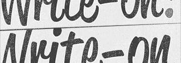

Reacting to Media Queries in Javascript

matchMedia provides a way for JS to react to media queries, but requires much code duplication. I wanted something that was a little more automatic.
Read it...
CSS Write-on Text Effect

Handwritten text being drawn onto the screen is a common effect in motion graphics. In this demo I recreate that effect using web technologies.
View the demo...
CSS Animated Slideshows

Revolving image galleries made with only CSS animations? Get out! Feast your eyes on some new wave CSS goodness.
View the demo...
Fun with HTML Form Validation Styles

HTML form validation is evolving in a big way. In this little ditty I lay out a process for making browser generated validation errors super sexy!
Read it...